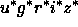

In 1988, a team of astrophysicists gathered together for the task of designing a next generation redshift survey -- one which would target both galaxies and quasars. In order to achieve the highest level of homogeneity in these two redshift samples, it was concluded that a dedicated imaging survey would be needed from which target galaxies and quasars would be selected, and that imaging and spectroscopy could be done with the same telescope switching between the two observing modes. Substantial improvement beyond existing surveys dictated an increase by a factor of 100 in terms of the number of targets available at the time -- in other words, a survey of one million galaxy redshifts. This survey, the Sloan Digital Sky Survey (SDSS) york00, is now underway, having begun standard operations in April 2000, and is planned to last five years. It will eventually cover steradians in the North Galactic Cap, plus three smaller regions in the South Galactic Cap. Now, at the end of the SDSS' first year of standard operations, we are pleased to present this early data release (EDR), consisting of 462 square degrees of imaging data and 54,008 spectra of objects selected from within this area.
This is the first substantive public release of data from the SDSS. Release
of the future survey data is scheduled to follow this first release in
approximately annual installments. The EDR is served over
the World Wide Web from the Space Telescope Science Institute , Fermilab, the National Astronomical Observatory of Japan
(NAOJ),
and the Max Planck Institute for
Astrophysics. The institutions
involved in the survey and the survey funding sources may be found at the end
of this paper. An historical account of the various institutional involvements
and acknowledgment of the major project contractors may be found in
york01.
, Fermilab, the National Astronomical Observatory of Japan
(NAOJ),
and the Max Planck Institute for
Astrophysics. The institutions
involved in the survey and the survey funding sources may be found at the end
of this paper. An historical account of the various institutional involvements
and acknowledgment of the major project contractors may be found in
york01.
A brief description of the hardware and associated software may be
found in york00, which is a technical summary of the project.
york00 serves as an introduction to the SDSS Project Book,
which is a full technical description of the survey hardware and software,
available on the web. The
as-built instrument parameters are given in
Table 1, and basic characteristics of the data are
given in Table 2. In brief, the survey uses a dedicated 2.5m
telescope, located at Apache Point Observatory (APO) in New Mexico,
with a  field of view. The telescope has two
instruments: a CCD imaging camera that takes data in drift-scanning
mode, nearly simultaneously in five photometric bands u, g, r, i
and z, and a pair of double spectrographs that use fiber optics to
simultaneously take spectra of 640 objects selected from the imaging
data. The imaging data are taken on nights of pristine conditions
(photometric, good seeing, no moon), while spectroscopy is done on
those nights that are less than perfect. The data are photometrically
calibrated with the aid of an auxiliary 20'' telescope, the
Photometric Telescope (PT), at the site.
The data are processed through a series of interlocking pipelines
which find the objects in the imaging data, measure their properties,
apply astrometric and photometric calibrations, select objects for
spectroscopic followup, extract and calibrate the spectra, and derive redshifts
and spectral types from the spectra.
field of view. The telescope has two
instruments: a CCD imaging camera that takes data in drift-scanning
mode, nearly simultaneously in five photometric bands u, g, r, i
and z, and a pair of double spectrographs that use fiber optics to
simultaneously take spectra of 640 objects selected from the imaging
data. The imaging data are taken on nights of pristine conditions
(photometric, good seeing, no moon), while spectroscopy is done on
those nights that are less than perfect. The data are photometrically
calibrated with the aid of an auxiliary 20'' telescope, the
Photometric Telescope (PT), at the site.
The data are processed through a series of interlocking pipelines
which find the objects in the imaging data, measure their properties,
apply astrometric and photometric calibrations, select objects for
spectroscopic followup, extract and calibrate the spectra, and derive redshifts
and spectral types from the spectra.
The data included in the EDR were taken as we commissioned the hardware and software of the survey, and do not all meet our scientific requirements, in particular in image quality (``seeing''), photometric calibration, and target selection. Nevertheless, the data are of excellent quality, and have supported a number of investigations: the discovery of high-redshift quasars (anderson01 and references therein); the large-scale distribution of galaxies (zehavi01); the gravitational lensing masses of galaxies fischer00 and clusters sheldon01; the luminosities and colors of galaxies blanton01a, shimasaku01, strateva01; the structure of the Milky Way ivezic00, yanny00, chen01; the discovery of brown dwarfs (leggett00 and references therein); the structure of the asteroid belt ivezic01; and many other results as well. An up-to-date, complete list of SDSS science publications may be found at http://www.sdss.org/science/pubs.html. Our aim in this paper is to describe the data in enough detail to allow the community to reproduce the results of these papers, and carry out further investigations with them.
The outline of this paper is as follows: § 2 describes the scope of the EDR, the basic data formats, and the way in which the data will be distributed to the astronomical community. § 3 describes the hardware of the project, emphasizing those characteristics that are necessary to understand the strengths and flaws of the data. § 4 describes the pipelines used to reduce the data, with emphasis on the nature of the scientifically useful outputs. We conclude in § 5.
Finally, a comment on notation. As we describe in § 4.5, our photometric calibration remains uncertain, due in part to differing filter curves on the 2.5m and the PT. The original filter system, and the AB system based on it as defined by fukugita96, is referred to here as u'g'r'i'z'; this is close to that realized on the PT. The 2.5m filters themselves are referred to as u g r i z, while the still-preliminary 2.5m-based photometry will be called .